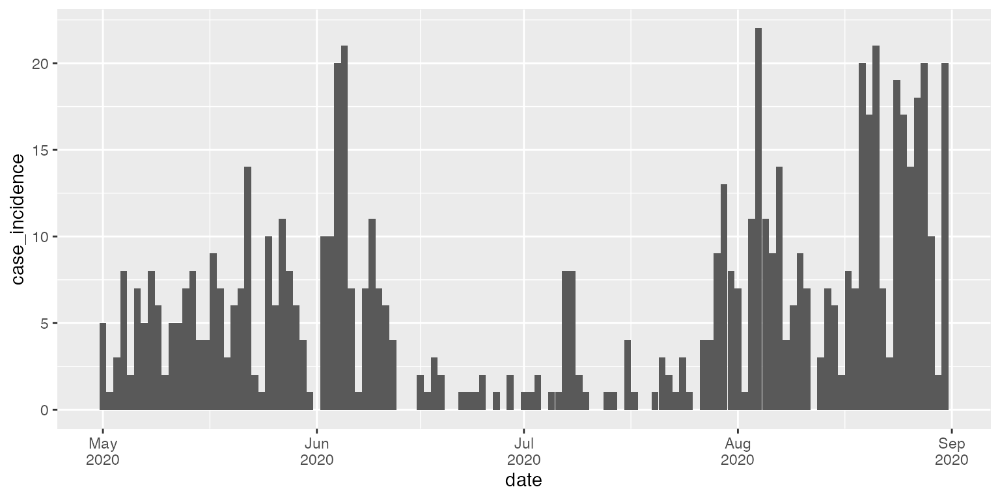

From aggregated incidence data to Re estimates
incidence_data_workflow_example.RmdIn this vignette, we demonstrate a workflow for estimating Re from aggregated incidence data.
library(estimateR)
# Data handling packages
library(dplyr)
#>
#> Attaching package: 'dplyr'
#> The following objects are masked from 'package:stats':
#>
#> filter, lag
#> The following objects are masked from 'package:base':
#>
#> intersect, setdiff, setequal, union
library(tidyr)
library(readr)
library(stringr)
library(lubridate)
#>
#> Attaching package: 'lubridate'
#> The following objects are masked from 'package:base':
#>
#> date, intersect, setdiff, union
# Package for plotting
library(ggplot2)In this example, we fetch and analyze COVID-19 incidence data from Estonia. The Estonian public health authorities publish detailed COVID-19 related data here. We start by fetching the dataset containing the number of reported cases for each day since the beginning of the COVID-19 pandemic.
url <- "https://opendata.digilugu.ee/opendata_covid19_tests_total.csv"
EST_data <- try(read_csv(url))
#>
#> ── Column specification ────────────────────────────────────────────────────────
#> cols(
#> LastStatisticsDate = col_date(format = ""),
#> StatisticsDate = col_date(format = ""),
#> DailyCases = col_double(),
#> TotalCases = col_double(),
#> TotalCasesLast14D = col_double(),
#> PerPopulation = col_double()
#> )
if ("try-error" %in% class(EST_data)) {
warning(str_c("Couldn't read EST case data at ", url))
} else {
# Keep columns of interest only
EST_incidence <- EST_data %>%
transmute(date = as_date(StatisticsDate),
case_incidence = DailyCases)
}In case the data is inaccessible, an earlier version is stored in the EST_incidence_data variable with estimateR.
EST_incidence <- EST_incidence_data
head(EST_incidence)
#> # A tibble: 6 × 2
#> date case_incidence
#> <date> <dbl>
#> 1 2020-02-26 1
#> 2 2020-02-27 0
#> 3 2020-02-28 0
#> 4 2020-02-29 0
#> 5 2020-03-01 0
#> 6 2020-03-02 1As a curation step, we make sure that there is no missing date and no negative or NA values in the original data.
EST_incidence <- EST_incidence %>%
# replace potential negative values by 0
mutate(case_incidence = if_else(case_incidence < 0, 0, case_incidence)) %>%
#replace potential NA values by 0
replace_na(list(case_incidence = 0)) %>%
# add zeroes for dates with no reported case
complete(date = seq.Date(min(date), max(date),
by = "days"),
fill = list(case_incidence = 0))Now that our incidence data is ready and curated, we need to gather all COVID-19 parameters required for the Re estimation.
## Delay between infection and onset of symptoms (incubation period) in days
# Ref: Linton et al., Journal of Clinical Medicine, 2020
# Gamma distribution parameter
shape_incubation <- 3.2
scale_incubation <- 1.3
# Incubation period delay distribution
distribution_incubation <- list(name = "gamma",
shape = shape_incubation,
scale = scale_incubation)
## Delay between onset of symptoms and case confirmation in days
# Ref: Bi et al., The Lancet Infectious Diseases, 2020
# Gamma distribution parameter
shape_onset_to_confirmation <- 2.1
scale_onset_to_confirmation <- 2.6
# Incubation period delay distribution
distribution_onset_to_confirmation <- list(name = "gamma",
shape = shape_onset_to_confirmation,
scale = scale_onset_to_confirmation)
## Serial interval (for Re estimation) in days
# Ref: Nishiura et al.,International Journal of Infectious Diseases, 2020
mean_serial_interval <- 4.8
std_serial_interval <- 2.3We also need some specifications for the analysis:
estimation_window = 3 # 3-day sliding window for the Re estimation
minimum_cumul_incidence = 100 # we start estimating Re after at least 100 cases have been recorded
N_bootstrap_replicates = 100 # we take 100 replicates in the bootstrapping procedure
# We specifiy the reference date (first date of data) and the time step of data.
ref_date = min(EST_incidence$date)
time_step = "day"We can then perform the Re estimation. The computations will take a few seconds to complete.
EST_estimates <- get_block_bootstrapped_estimate(
incidence_data = EST_incidence$case_incidence,
N_bootstrap_replicates = N_bootstrap_replicates,
delay = list(distribution_incubation, distribution_onset_to_confirmation),
estimation_window = estimation_window,
minimum_cumul_incidence = minimum_cumul_incidence,
mean_serial_interval = mean_serial_interval,
std_serial_interval = std_serial_interval,
ref_date = ref_date,
time_step = time_step,
combine_bootstrap_and_estimation_uncertainties = TRUE
)
head(EST_estimates)
#> # A tibble: 6 × 4
#> date Re_estimate CI_down_Re_estimate CI_up_Re_estimate
#> <date> <dbl> <dbl> <dbl>
#> 1 2020-03-06 2.14 1.63 2.66
#> 2 2020-03-07 1.87 1.44 2.31
#> 3 2020-03-08 1.65 1.29 2.01
#> 4 2020-03-09 1.49 1.18 1.80
#> 5 2020-03-10 1.38 1.11 1.66
#> 6 2020-03-11 1.31 1.06 1.58Now let us plot these estimates through time, along with their confidence intervals.
ggplot(EST_estimates, aes(x = date, y = Re_estimate)) +
geom_line(lwd= 1.1) +
geom_ribbon(aes(x = date, ymax = CI_up_Re_estimate, ymin = CI_down_Re_estimate), alpha = 0.45, colour = NA) +
scale_x_date(date_breaks = "1 month",
date_labels = '%b\n%Y') +
ylab("Reproductive number") +
coord_cartesian(ylim = c(0, 3.5)) +
xlab("") +
theme_bw()
The results seem reasonable overall, especially from November 2020 on. However, the two wide swings in June and July 2020 are suspicious. Let us zoom in on the raw incidence data to check if the data seems to carry real signal for these swings or if they are byproducts of isolated bumps in the reported numbers.
ggplot(filter(EST_incidence, date < as.Date("2020-09-01"), date >= as.Date("2020-05-01")), aes(x = date, y = case_incidence)) +
geom_bar(stat="identity") +
scale_x_date(date_breaks = "1 month",
date_labels = '%b\n%Y')
For both early June and early July we see that the overall numbers are very low, and that the Re peaks correspond to particularly high outliers in the reported numbers. Moreover, uncertainty intervals are very wide during this period.
This should make us wary of drawing any conclusions for the Re estimates over this period before investigating whether the peaks in the observed numbers were not explainable by something else than a rise in Re. The external reason could be an adjustment in the reported numbers, or a one-time large testing event.
It is always extremely valuable to plot the incidence data when doing an Re estimation, even when nothing looks suspicious in the estimates.